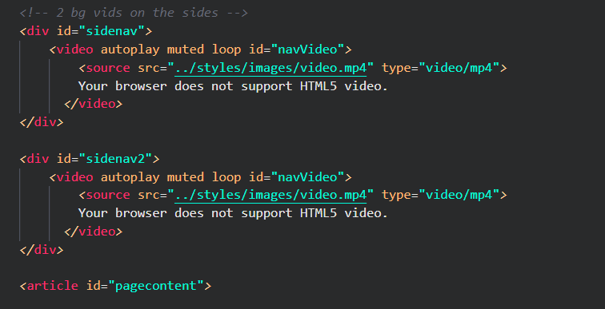
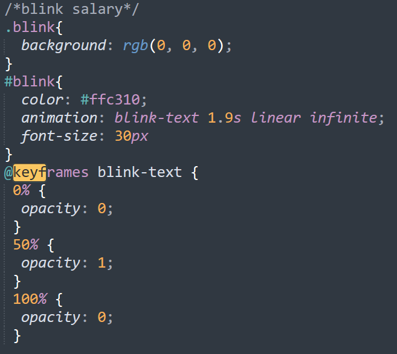

Welcome to our company
Enhancement #1: Video Page Background
We implemented two videos on the sidebar of our page to give a futuristic feel.
How it works
- We put all our page content into the 'article' tag. Then we created two divisions containing 2 autoplay loop videos before the 'article' tag 
- Then we style the 2 sidenav videos in css so that the videos are:
- Fixed
- Stay at the top left
- Has height and width that fits the side nav and extend to the end of the page
- We also made sure the page content ('article' tag) has margin on the size to fit the video and padding to seperate them
Enhancement#2: The blink effect
We added the blink effect to the salary information on jobs.html to add emphasis.
How it works
- Here we gave the salary range class and id so that makes it easier to create blink effect
- The keyframe is a special rule in CSS which change from 1 animation to another
- The lower the opacity is, the harder it is to see the animation 